🇫🇮 Finland
🌲 Flora: The Taiga, the Understorey and the Lake Network
Finland is the most forested country in Europe: about 75% of its territory (22.8 million hectares) is covered by boreal forest, or taiga. This biome is dominated by a handful of extremely resilient tree species, but supports an understorey of extraordinary biodiversity.
The Dominant Tree Species
The Finnish forest is made up of about 30 tree species, but three of them account for over 95% of the biomass:
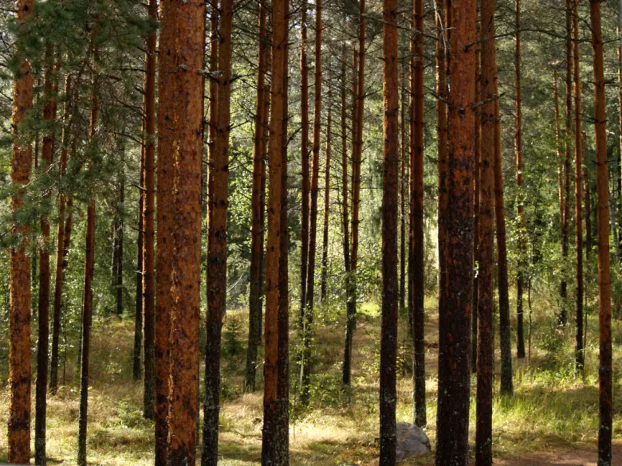
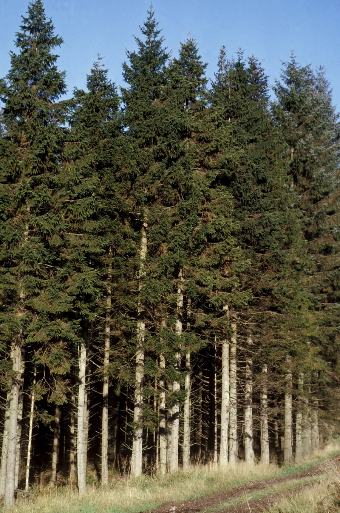
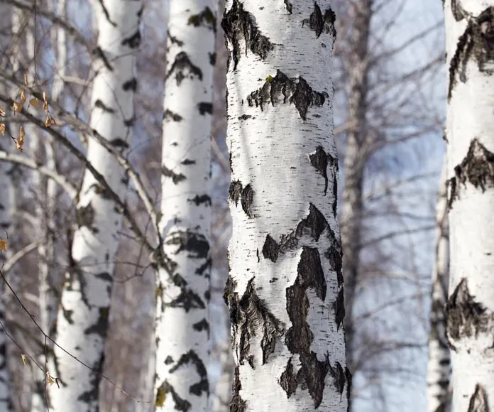
The Treasure of the Understorey: Berries
The "Everyman's Right" (Jokamiehenoikeus) lets anyone freely pick the fruits of the forest.
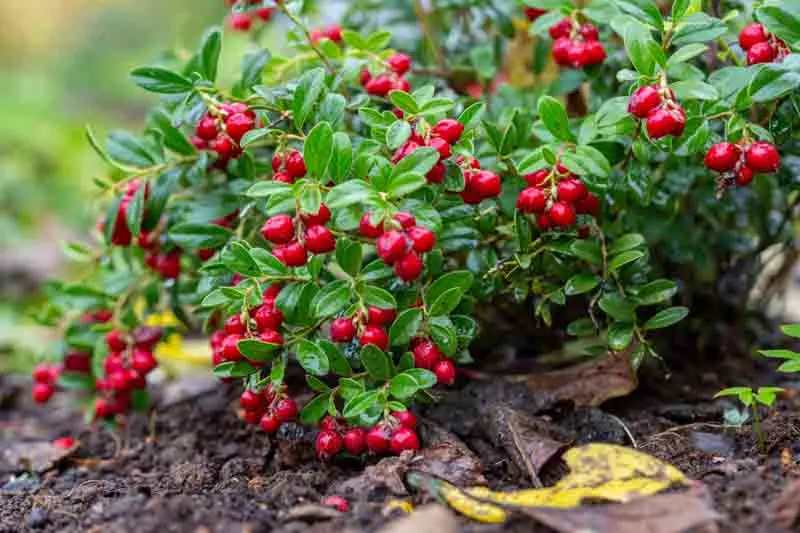
Edible Mushrooms and Identification
Of Finland's 5,010 fungal species, about 200 are edible. Foraging requires care to avoid mixing them up with toxic species. The Finnish golden rule is: "Don't pick white mushrooms." The destroying angel (Amanita virosa), entirely white and deadly, is present in Finnish woods.
| Edible Species | Identification | Look-alike Species / Risk |
|---|---|---|
| Chanterelle (Cantharellus cibarius, kantarelli) |
A pale egg-yolk-yellow or orange colour. An irregularly funnel-shaped cap (2-10 cm). Underneath the cap it has no true gills, but thick, branched ridges that run down the stem and don't peel off easily. The stem is firm and the flesh inside is white. If snapped, the stem shreds into layers like string cheese. Gives off a distinct apricot scent. Grows on the ground, never on dead wood. Ripens: late August-September. | False Chanterelle (Hygrophoropsis aurantiaca). The cap is a brighter orange and velvety/fuzzy to the touch (the true chanterelle is smooth). Underneath it has true gills, thin and dense, which come away easily when rubbed or scratched with a finger. The stem snaps cleanly. Smells like a generic earthy mushroom, no apricot. Often grows on decaying wood (stumps, wood chips). Causes gastrointestinal upset. |
| Porcini / Penny Bun (Boletus edulis, herkkutatti) |
A convex cap ranging from brown to dark brown, smooth and slightly sticky when damp. Underneath the cap it has small, dense pores (not gills), which turn from white to yellowish-greenish with age. The stem is sturdy, bulbous, white to light brown, with a white net pattern visible especially near the top under the cap. The flesh is white, firm, doesn't change colour when cut and has a hazelnut flavour. | Bitter Bolete (Tylopilus felleus, sappitatti). The cap is a uniform light brown. The pores, initially white, turn pinkish with age (a key difference). The stem has a dark net pattern (like black fishnet stockings). The flesh may turn slightly pink when cut. Not poisonous but extremely bitter (even raw): a single piece ruins an entire pot. |
| Winter Chanterelle / Yellowfoot (Craterellus tubaeformis, suppilovahvero) |
A deep funnel-shaped, small, brownish-grey cap. The stem is hollow, thin and a distinct yellow colour. Underneath the cap it has widely spaced, decurrent greyish-yellow ridges. Grows in large colonies hidden in the deep moss of spruce forests. Late ripening: September-November. Being thin and fleshy, it's perfect for home drying. | Craterellus lutescens (yellow chanterelle). Very similar but with a more orange cap and almost no true ridges underneath (nearly smooth). Equally excellent and edible. |
| Wood Hedgehog (Hydnum repandum, vaaleaorakas) |
The most foolproof mushroom in Finland. A pale yellow cap, often irregularly and asymmetrically shaped. Its unmistakable feature is the underside: instead of gills or pores, it has dense, brittle whitish spines (like the bristles of a brush). The stem is white and firm. No poisonous look-alike in the Hydnaceae family in Finland. | No poisonous look-alike. Only risk: it accumulates more radioactive isotopes (Caesium-137 from Chernobyl) than other mushrooms; blanching before eating is recommended. |
Wildflowers and Carnivorous Plants
The nutrient-poor soil of Finland's marshes has driven some plants to a fascinating evolutionary path:
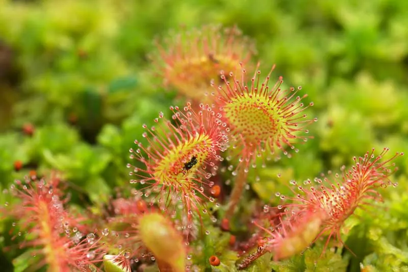
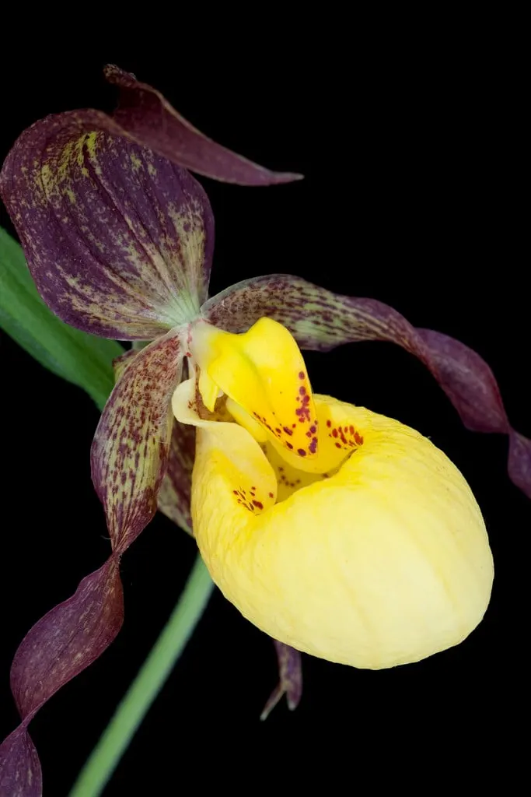

🦌 Fauna: Predators, Deer and the Endemic Seal
Finnish wildlife includes species adapted to extreme climates and vast uninhabited areas. The dense forests shelter elusive predators that rarely show themselves to humans.
The "Big Four" Carnivores
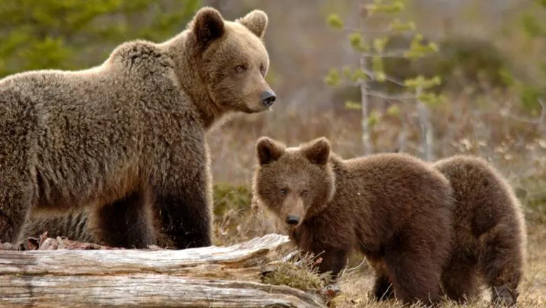
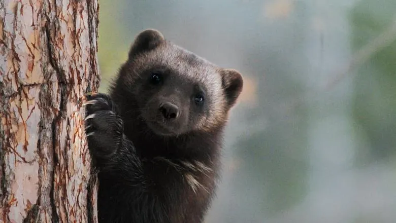
The Deer Family
The Emblem of Saimaa: The Ringed Seal
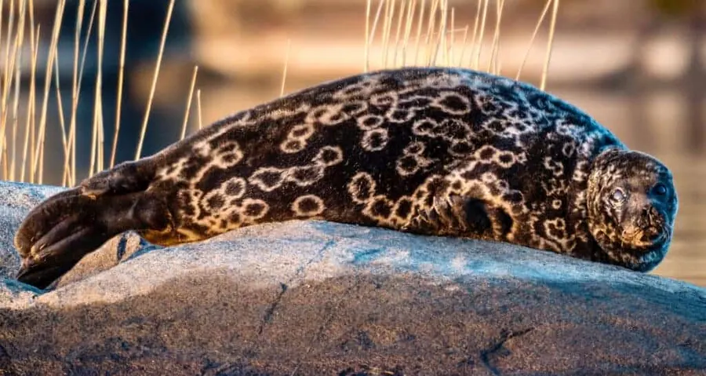
The Saimaa ringed seal (Pusa hispida saimensis, saimaannorppa) is one of the rarest and most endangered animals on the planet.
Birdlife
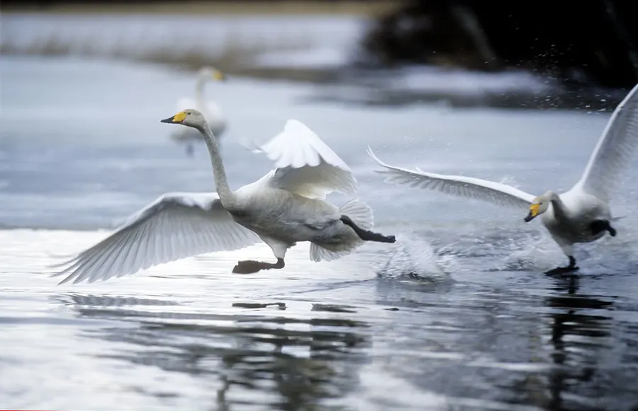
Fish
The cold, oligotrophic waters (nutrient-poor but extremely clear) host prized fish:
🪨 Geology: The Legacy of the Great Glaciation
Finland sits on extremely ancient foundations, but its current appearance was literally planed and carved out by ice in geologically recent times.
The Bedrock: The Fennoscandian Shield and Rapakivi Granite
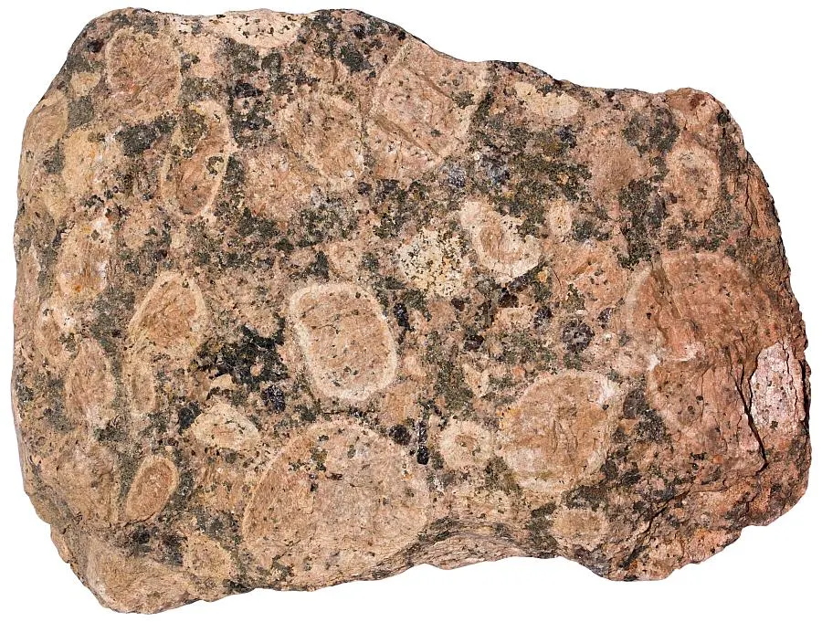
Finland's bedrock belongs to the Fennoscandian Shield, with rocks ranging from 1.6 to over 3 billion years old. The national rock is granite. In the south-eastern region (the Saimaa Geopark area and Vyborg) there's a rock unique in the world: rapakivi granite (1.6 billion years old). Its Finnish name literally means "muddy stone" or "crumbling stone" (rapautua = to crumble, kivi = stone). It's characterised by large rounded crystals of red/pink orthoclase surrounded by a ring of green/grey oligoclase. Because these minerals have different thermal expansion coefficients, the rock fractures easily with temperature swings and breaks down into reddish gravel (called moro). It's widely used in architecture and paving (commercially known as "Baltic Brown").
The Weichselian Glaciation and Glacial Landforms
About 25,010 years ago, during the last glacial maximum, the whole of Finland lay buried under an ice sheet 2 kilometres thick. The immense pressure stripped away an average of 7-25 metres of solid rock, planing down the hills (creating roche moutonnée, smooth on the upstream side and rough on the downstream side) and carving out pre-existing fractures. When the climate warmed, the ice began to melt and retreat north-westward, leaving behind unmistakable landforms:
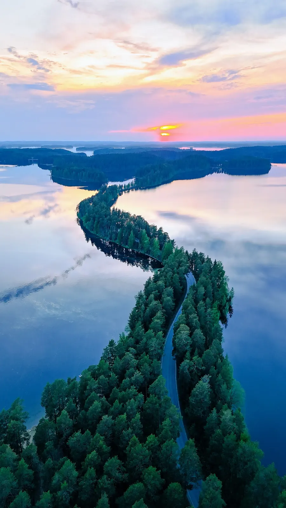
The 188,000 Lakes and Post-Glacial Uplift
The melting ice filled hollows carved into the granite and valleys dammed by moraines, creating Finland's immense blue maze. Lake Saimaa (Europe's 4th largest) is a tangle of 4,400 km² with over 14,000 islands. Even today, freed from the incalculable weight of 2 km of ice, Finland's crust is rising through isostatic rebound. Post-glacial uplift raises the land by up to 1 centimetre a year in the Gulf of Bothnia (about 3 mm/year in the lake region). This phenomenon outpaces global sea-level rise: in Finland, new land is literally, continuously emerging from the water, joining islands together and turning bays into enclosed lakes.
🌌 Natural Phenomena: The Realm of Summer Light
Finland's northerly position (between the 60th and 70th parallels north) upends the light-and-dark cycles we're used to at mid-latitudes.
The Midnight Sun and White Nights
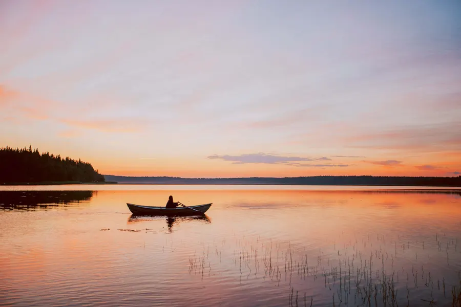
Because of the tilt of the Earth's axis (23.5°), in summer the northern hemisphere leans toward the sun.
Biological effects: The excess light drastically reduces melatonin production (Finns sleep less and are hyperactive in summer), birdsong continues around the clock, and vegetation grows at a frantic pace to make up for the short warm season. Arctic vegetables and berries, exposed to continuous light, develop exceptional concentrations of sugars and antioxidants.
Noctilucent Clouds (NLC)
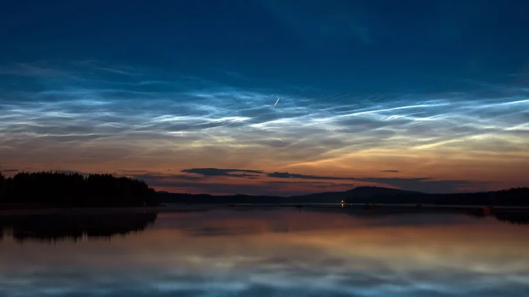
Because of the absence of darkness, the northern lights aren't visible in summer. However, between June and July, it's possible to observe an extremely rare atmospheric phenomenon: noctilucent clouds. Located in the mesosphere at about 80-85 km altitude (the highest clouds on Earth, at the edge of space), they're formed from tiny ice crystals clumped around meteor dust. When the sun dips just below the horizon, the lower atmosphere is in shadow, but sunlight still illuminates these very high clouds from below, making them glow an electric blue or silvery colour against the dark twilight sky.
🌳 Ecosystems: A Delicate Balance of Water and Peat
The Finnish environment isn't just forest, but an interconnected mosaic of three great ecosystems.
1. The Boreal Forest (Taiga)
A resilient but slow-growing biome, adapted to harsh winters (down to -40°C) and short summers (15-25°C). Trees have narrow needles so they don't break under snow and thick bark to withstand the cold. Historically, the taiga's natural cycle depended on forest fires (every 50-100 years), which cleared the understorey of excess acidic humus, released alkaline nutrients into the soil and allowed pioneer species (birch and pine) to regenerate. Today, human fire suppression favours the near-total dominance of spruce.
2. The Peatlands (Suo)
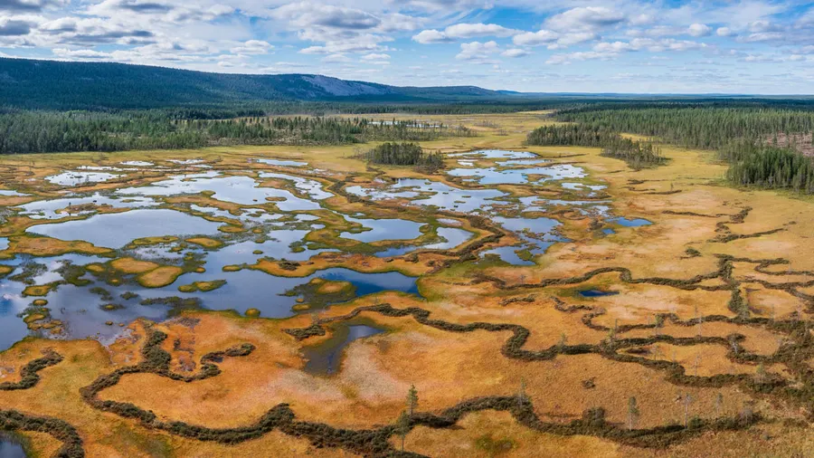
About 30% of Finland's land area (10 million hectares) is made up of peatlands, bogs and marshes. They form because the cold climate, flat terrain and abundant water drastically slow the decomposition of dead organic matter.
3. The Lake Ecosystem (Järvi-Suomi)
Finland's lakes cover 10% of the country. They're oligotrophic ecosystems: the water is extremely poor in nutrients (nitrogen and phosphorus). This prevents excessive algae growth, keeping the water exceptionally clear, crystalline and often drinkable straight from the source. Summer thermal stratification brings warm surface water (18-22°C) where perch swim, and cold deep water (4-8°C) that shelters whitefish. In winter, ice (often 30-60 cm thick) seals the lakes from December to April. This freezing period is vital not only for the Saimaa seal's breeding, but also for the life cycle of Arctic fish that need cold, oxygenated water. The spring thaw causes the water to mix vertically, carrying nutrients deposited on the lakebed up to the surface and kicking off the explosion of summer life.
Sources and Natural History References: Data on flora, fauna and geology drawn from Metsähallitus (the Finnish Forest Administration), the Saimaa UNESCO Global Geopark and Suomen Luonnonsuojeluliitto (the Finnish Association for Nature Conservation).